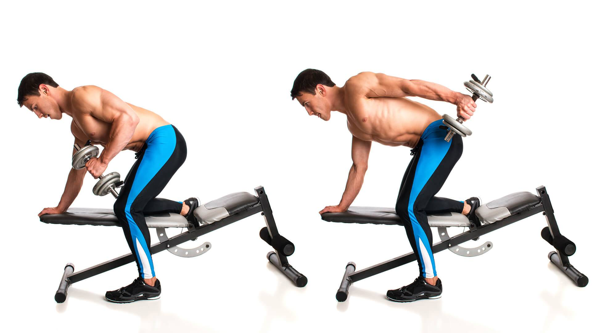

Французский жим - изолированное упражнение для укрепления и увеличения трицепса. Является базовым упраажнением, укрепляет и увеличивает трицепс, делает его объемным и рельефным.Существует несколько видов данного упражнения: лежа и стоя (сидя).
Техника выполнения упражнения
Можно выполнять лёжа, стоя или сидя. В качестве отягощения используется штанга или гантель. По мнению большинства тренеров, работа с гантелями предпочтительнее, так как увеличивается амплитуда движения, при этом снижается риск травмы. Новичкам следует сначала освоить технику выполнения лёжа на горизонтальной скамье.
Лечь на скамью, ноги удобно расположить на полу, затылком прижаться к поверхности. Во время выполнения упражнения плечи, шея и голова остаются неподвижными.
Согнуть руки в локтях и взяться за гриф хватом снизу. Ладони расположить примерно на уровне плеч либо чуть шире.
Разогнуть руки, поднимая гриф над головой – это и есть исходная позиция для данного упражнения.
Медленно опустить гриф за голову, как бы желая поставить штангу на пол.
Почувствовав, что штанга опущена достаточно низко, о чем свидетельствует напряжение в трицепсе, выжать гриф вверх, делая выдох.
Чтобы осложнить упражнение, следует установить спинку скамьи под углом 45-600. В этом случае рекомендуется выполнять упражнение с товарищем, чтобы кто-то смог подать штангу и забрать ее в конце подхода.
Техника выполнения стоя:
Встать прямо, расправить плечи, лопатки свести вместе. Ноги немного расставить
В руки взять гантель за перемычку так, чтобы пальцы замком охватывали снаряд. Необходимо поэкспериментировать с хватом, выбирая наиболее удобное положение пальцев.
Шею зафиксировать в одном положении, взгляд направлен вперед. Опускать голову вниз нельзя.
Завести гантель за голову, руки согнуты в локтях.
Сделать вдох, а на выдохе опустить снаряд ниже шеи, максимально сгибая руки. Локти при этом направлены точно вверх.
Техника выполнения сидя:
Гантель можно заменить штангой. Упражнение так становится даже немного проще. Качать трицепс удобно с EZ-грифом, так как он небольшого размера и удобно лежит в руках.
Советы
Лежа на скамье не нужно выгибать поясницу. Ягодицы, спина, лопатки и затылок плотно прижаты к поверхности. Необходимо постоянно удерживать живот в напряжении, следить за осанкой, чтобы не выпячивать грудь, но и не опускать плечи.
Новичкам лучше осваивать упражнение стоя, выбрав гантель небольшого веса.
Существует два мнения, как делать французский жим. Жать штангу можно за голову, либо ко лбу. В первом случае лучше растягиваются мышцы трицепса, так как увеличивается амплитуда движения, правда, жим за голову опасно выполнять с большим весом. Во втором случае, при подъеме штанги до уровня лба, амплитуда движения уменьшается, трицепс меньше растягивается, но быстрее забивается. Сложно однозначно сказать, какая техника лучше, поэтому рекомендуется попробовать оба варианта и сделать вывод самостоятельно.
Выводить штангу далеко за голову не нужно. Гриф опускается вниз на расстоянии буквально 1-2 см от головы, чтобы не задеть ее, но не дальше
Опуская штангу за голову необходимо следить за положением локтей. Во время выполнения любой фазы упражнения локти смотрят вперед и не расходятся в стороны.
Движение вниз осуществляется на вдохе, жим вверх – на выдохе.
Выполнение на наклонной скамье еще больше увеличивает амплитуду движения и эффективнее растягивает трицепс, однако требует безупречной техники и правильного подбора веса, иначе легко получить травму.
Жим выполняется медленно и плавно. Резкие движения чреваты растяжением связок и опасны для сустава.
Когда выполнять
Выполняется во время любой тренировки трицепса. Чаще всего работу над трицепсом совмещают с тренировкой груди – это план можно дополнить французским жимом.
Количество повторений
3-4 подхода по 10-12 раз. При работе с большим весом выполняется 12, 10, 8 и 6 раз за подход.
Практическое видео
Разгибания рук с гантелями в наклоне
Разгибания рук с гантелями в наклоне - изолированное упражнение на проработку трицепса.
Регулярное выполнение поможет сформировать объемный и рельефный трицепс. Для лучшего результата следует комбинировать с другими упражнениями для этой мышцы.
Техника выполнения упражнения
Стоя. Взять в руки гантели, нагнуть корпус так, чтобы он был практически параллелен полу. Согнуть локти под прямым углом, одновременно отводя плечи назад. Затем разогнуть руки назад, полностью их выпрямляя. Движение руки назад выполняется на выдохе, возвращение в начальную позицию – на вдохе. Во время выполнения следить за осанкой, не сутулиться. Взгляд направлен прямо, шея статична, в пояснице – естественный прогиб.
С опорой на скамью. Еще одна техника выполнения позволяет делать упражнение поочередно для каждой руки. Необходимо поставить одно колено на скамью и упереться в нее рукой либо схватиться за край. Вторая нога стоит на полу, в руке гантель, корпус наклонен до параллели с полом. Шея вытянута вперед, взгляд перед собой. Опорная нога немного согнута в колене. Руку с гантелью согнуть под прямым углом, затем сделать вдох и на выдохе отвести ее назад, полностью выпрямляя, на вдохе – вернуться в исходную позицию.

Советы
Опираясь на скамью, не следует отводить плечи назад, все движение выполняет локоть.
Разогнув руку с гантелью, рекомендуется задержаться в такой позиции на 1-2 секунды, чтобы трицепс лучше растянулся, а затем вернуться в исходное положение.
Во время выполнения без опоры не следует раскачиваться или выкидывать руку назад. Все движения выполняются медленно и плавно, работает только локоть и верхняя часть руки. Забрасывание и рывки во время движения – верный признак того, что взят слишком большой вес гантелей.
Взяв гантели в руки, следует зафиксировать положение локтевого сустава. Во время разгибания он не должен опускаться выше или ниже, так как это ограничивает амплитуду движения, следовательно, трицепс нагружается меньше.
Когда выполнять
В конце тренировки трицепса и груди. Так как упражнение изолированное и очень простое, его лучше использовать для того, чтобы окончательно «добить» трицепс в конце тренировки. Можно выполнять после французского жима.
Количество повторений
3-4 подхода по 10-15 раз, в зависимости от выбранного веса. Большие веса не используются, так как трицепс сам по себе очень маленький и не справится с такой нагрузкой, поэтому в процесс выполнения будут вовлекаться плечевые мышцы, из-за чего теряется весь смысл в упражнении. Оптимальный вес – 5-8 кг.
Практическое видео
Разгибание рук с верхнего блока
Разгибание на трицепс на верхнем блоке – классическое упражнение бодибилдинга и фитнеса. Это обычное односуставное движение, которое пользуется большой популярностью ввиду простоты.
Техника выполнения упражнения
Движение стартует с той точки, которую многие считают серединой амплитуды. Нужно начинать разгибать руки с позиции «предплечье параллельно полу».
Принять правильную позицию можно, встав на расстоянии 30-40 см от блока кроссовера;
Ручку следует захватить ровно, на одинаковом расстоянии от центра обеими руками./li>
Выполнить легкий наклон вперед и чуть согнуть колени;
Сделать вдох, зафиксировать пресс.
Лопатки свести к позвоночнику и опустить к тазу;
Плечи держать развернутыми, в одном положении
На выдохе нужно разогнуть руки только в локтевых суставах, оставив плечи стабильными.
В нижней точке движения стоит задержаться, сократив трицепсы.
Затем – вернуться в центр амплитуды и не сгибать локти дополнительно, чтобы «протолкнуть» вес к плечам.
Выполнив необходимое количество повторений, нужно вернуть снаряд в исходное положение.
Советы
Упражнение изолированное- не нужно «подрабатывать» ногами, корпусом и прессом
Чем больше акцент на наклон вперед, тем меньше нагрузки получают трицепсы
Бросать вес в негативной фазе нельзя, нужно плавно опустить его, как бы «довести» мышцами
Следует контролировать локти, чтобы предплечья не отходили далеко от корпуса
Темп должен быть ровным, одинаковым, не нужно толкать блок вниз за счет инерции и работать рывками
Руки нужно разгибать ровно до той точки, пока чувствуется напряжение, но не переразгибать, «блокируя в замок» локоть
Нельзя сгибать запястья, чтобы не перегрузить связки;
Кисти лучше держать жесткими
Блок – держать на весу, вплоть до окончания упражнения
Когда выполнять
В классических планах для фитнеса разгибание на блоке – последнее упражнение на трицепс. Тут важно тоже не слишком активно «вставлять» локти, и избегать слишком большой инерционной нагрузки. Цель упражнения – проработать трицепс, а не сделать так, чтобы руки просто переутомились, и человек получил травму из-за резкой «вставки» локтей.
Количество повторений
Обычно движение выполняется в режиме от 12 и выше повторений, но возможна и работа в диапазоне от 8 повторов и даже меньше.